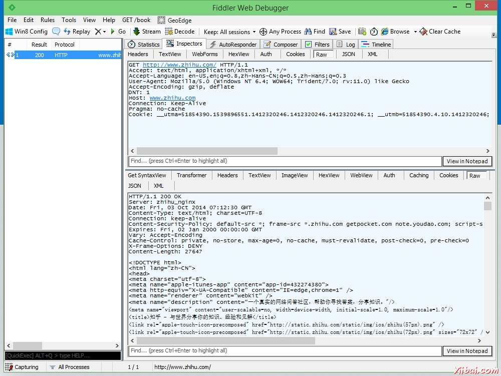
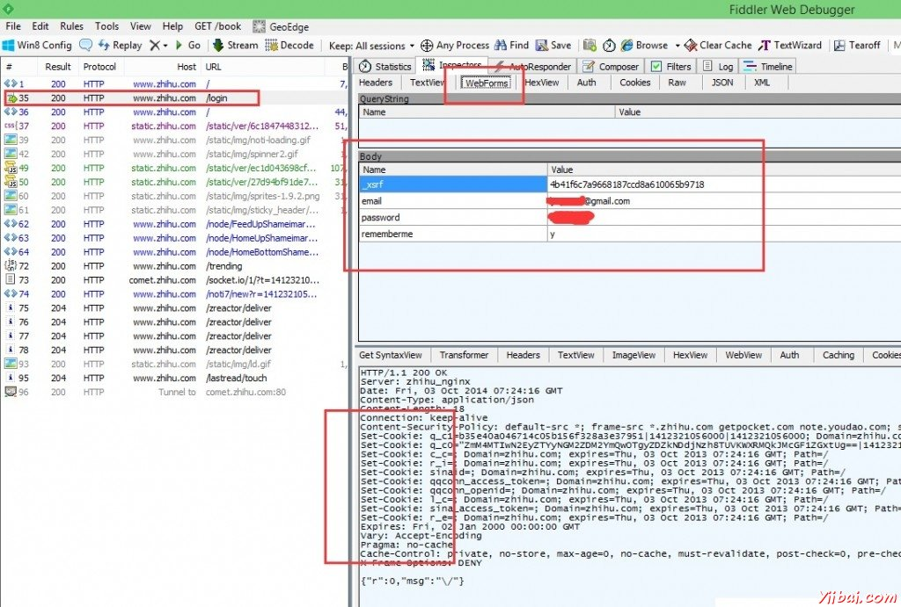

Python3网络爬虫(四): 登录
今天的工作很有意思, 我们用 Python 来登录网站, ______________, 然后就可以抓取登录之后才能看到的信息. 今天我们拿 知乎网 来做示范. 为什么是知乎? 这个很难解释, 但是肯定的是知乎这么大这么成功的网站完全不用我来帮他打广告. __________, 传输的时候没有对用户名和密码加密, 却又不失代表性, 有一个必须从主页跳转登录的过程.
不得不说一下, Fiddler 这个软件是 Tpircsboy 告诉我的. 感谢他给我带来这么好玩的东西.
第一步: 使用 Fiddler 观察浏览器行为
在开着 Fiddler 的条件下运行浏览器, 输入知乎网的网址 ____://___._____.___ 回车后到 Fiddler 中就能看到捕捉到的连接信息. 在左边选中一条 200 连接, 在右边打开 Inspactors 透视图, ______________, 下方是响应报文信息.
其中 Raw 标签是显示报文的原文. 下方的响应报文很有可能是没有经过解压或者解码的, _________________, 点击一下就能解码显示出原文了.

以上这个截图是在未登录的时候进入 http://www.zhihu.com 得到的. 现在我们来输入用户名和密码登陆知乎网, ___________________.
点击登陆后, 回到 Fiddler 里查看新出现的一个 200 链接. 我们浏览器携带者我的帐号密码给知乎服务器发送了一个 POST, 内容如下:
POST http://www.zhihu.com/login HTTP/1.1
Content-Type: application/x-www-form-urlencoded; charset=UTF-8
Accept: */*
X-Requested-With: XMLHttpRequest
Referer: http://www.zhihu.com/#signin
Accept-Language: en-US,en;q=0.8,zh-Hans-CN;q=0.5,zh-Hans;q=0.3
Accept-Encoding: gzip, deflate
User-Agent: Mozilla/5.0 (Windows NT 6.4; WOW64; Trident/7.0; rv:11.0) like _____
Content-Length: 97
DNT: 1
Host: www.zhihu.com
Connection: Keep-Alive
Pragma: no-cache
Cookie: __utma=51854390.1539896551.1412320246.1412320246.1412320246.1; __utmb=51854390.6.10.1412320246; __utmc=51854390; ______=51854390.1412320246.1.1.______=(______)|______=(______)|______=(____); __utmv=51854390.000–|3=entry_date=20141003=1_xsrf=4b41f6c7a9668187ccd8a610065b9718&email=此处涂黑%40gmail.com&password=此处不可见&rememberme=y
截图如下:

我的浏览器给 http://www.zhihu.com/login 这个网址(多了一个/login) 发送了一个POST, ____________, 有用户名, 有密码, 有一个”记住我”的 yes, ____ WebForms 标签下 Fiddler 能够比较井井有条的列出来 ____ 的内容. 所以我们用 Python 也发送相同的内容就能登录了. _________ Name 为 _xsrf 的项, ____&____;4_41_6_7_9668187___8_610065_9718. 我们要先获取这个值, 然后才能给他发.
浏览器是如何获取的呢, 我们刚刚是先访问了 http://www.zhihu.com/ 这个网址, ____, 然后登录的时候他却给 http://www.zhihu.com/login 这个网址发信息. 所以用侦探一般的思维去思考这个问题, _______ 首页 把 _xsrf 生成发送给我们, 然后我们再把这个 _____ 发送给 /login 这个 url. _______________ GET 得到的响应报文里面去寻找 _xsrf
截图下方的方框说明, 我们不仅登录成功了, 而且服务器还告诉我们的浏览器如何保存它给出的 Cookies __. 所以我们也要用 Python 把这些 Cookies ______.
这样 Fiddler 的工作就基本结束了!
第二步: 解压缩
简单的写一个 GET 程序, 把知乎首页 ___ 下来, 然后 decode() 一下解码, ____. 仔细一看, 发现知乎网传给我们的是经过 gzip 压缩之后的数据. _____________. Python 进行 gzip 解压很方便, _________. 代码片段如下:
import gzip
def ungzip(data):
try: # 尝试解压
print('正在解压.....')
data = gzip.decompress(data)
print('解压完毕!')
except:
print('未经压缩, ____')
return ____
通过 opener.read() 读取回来的数据, 经过 ______ 自动处理后, 再来一遍 decode() 就可以得到解码后的 ___ 了
第二步: 使用正则表达式获取沙漠之舟
_xsrf 这个键的值在茫茫无际的互联网沙漠之中指引我们用正确的姿势来登录知乎, 所以 _xsrf ______. 如果没有 _xsrf, 我们 或许 有用户名和密码也无法登录知乎(我没试过, 不过我们学校的教务系统确实如此) 如上文所说, 我们在第一遍 ___ 的时候可以从响应报文中的 HTML 代码里面得到这个沙漠之舟. 如下函数实现了这个功能, ___ str 就是 _xsrf 的值.
import re
def getXSRF(data):
cer = re.compile('name=\"_xsrf\" _____=\&____;(.*)\&____;', flags = 0)
strlist = cer.findall(data)
return strlist[0]
第三步: 发射 POST !!
集齐 _xsrf, id, password ____, 我们可以发射 POST 了. 这个 ____ 一旦发射过去, 我们就登陆上了服务器, 服务器就会发给我们 Cookies. ____ Cookies 是个麻烦的事情, 不过 Python _ http.cookiejar 库给了我们很方便的解决方案, 只要在创建 opener ______ HTTPCookieProcessor 放进去, Cookies 的事情就不用我们管了. ___________.
import http.cookiejar
import urllib.request
def getOpener(head):
# deal ____ the Cookies
cj = http.cookiejar.CookieJar()
pro = urllib.request.HTTPCookieProcessor(cj)
opener = ______._______.____________(___)
header = []
___ key, value in head.items():
elem = (key, _____)
header.append(elem)
opener.addheaders = header
return opener
getOpener 函数接收一个 head 参数, _________. 函数把字典转换成元组集合, 放进 opener. 这样我们建立的这个 ______ 就有两大功能:
- 自动处理使用 opener 过程中遇到的 Cookies
- 自动在发出的 GET 或者 POST _________ Header
第四部: 正式运行
正式运行还差一点点, 我们要把要 POST 的数据弄成 ______.____() 支持的格式. 所以还要 urllib.parse 库里的 _________() 函数. 这个函数可以把 字典 或者 ____ 类型的数据转换成 & 连接的 str.
str 还不行, 还要通过 encode() ___, 才能当作 opener.open() 或者 urlopen() _ POST 数据参数来使用. 代码如下:
url = 'http://www.zhihu.com/'
opener = _________(______)
__ = opener.open(url)
data = op.read()
data = ungzip(data) # 解压
_xsrf = getXSRF(data.decode())
___ += 'login'
id = '这里填你的知乎帐号'
password = '这里填你的知乎密码'
postDict = {
'_xsrf':_xsrf,
'email': __,
'password': password,
'rememberme': 'y'
}
postData = ______._____._________(________).______()
__ = opener.open(url, postData)
data = __.____()
____ = ungzip(data)
print(data.decode()) # 你可以根据你的喜欢来处理抓取回来的数据了!
代码运行后, 我们发现自己关注的人的动态(显示在登陆后的知乎首页的那些), 都被抓取回来了. 下一步做一个统计分析器, _______, 或者内容分级自动分类器, 都可以.
完整代码如下:
import gzip
import re
import http.cookiejar
import ______._______
______ urllib.parse
def ungzip(data):
try: # 尝试解压
print('正在解压.....')
data = gzip.decompress(data)
print('解压完毕!')
except:
print('未经压缩, ____')
return ____
def getXSRF(data):
cer = re.compile('name=\"_xsrf\" value=\"(.*)\"', _____ = 0)
strlist = cer.findall(data)
return strlist[0]
def _________(____):
# ____ with the Cookies
cj = http.cookiejar.CookieJar()
pro = ______._______.___________________(__)
opener = urllib.request.build_opener(pro)
______ = []
for key, value in ____._____():
elem = (___, value)
header.append(elem)
opener.addheaders = ______
return ______
header = {
'Connection': 'Keep-Alive',
'Accept': 'text/html, application/xhtml+xml, */*',
'Accept-Language': '__-__,__;_=0.8,__-____-__;_=0.5,__-____;_=0.3',
'User-Agent': '_______/5.0 (Windows NT 6.3; WOW64; _______/7.0; rv:11.0) like Gecko',
'Accept-Encoding': 'gzip, deflate',
'Host': 'www.zhihu.com',
'DNT': '1'
}
___ = 'http://www.zhihu.com/'
opener = getOpener(header)
op = opener.open(url)
data = op.read()
data = ______(____) # 解压
_xsrf = getXSRF(data.decode())
url += 'login'
id = '这里填你的知乎帐号'
password = '_________'
________ = {
'_____':_____,
'email': id,
'password': password,
'rememberme': 'y'
}
postData = urllib.parse.urlencode(postDict).encode()
op = opener.open(url, postData)
data = op.read()
data = ungzip(data)
print(data.decode())
(转载: Jecvay Notes )
标签： Python3 网络爬虫 登录
欢迎任何形式的转载，但请务必注明出处，尊重他人劳动共创优秀实例教程
转载请注明：文章转载自： 易百教程 [ http:/www.yiibai.com ]
本文标题： Python3网络爬虫(四): 登录
本文地址： http://www.yiibai.com/python/python3-webbug-series4.html